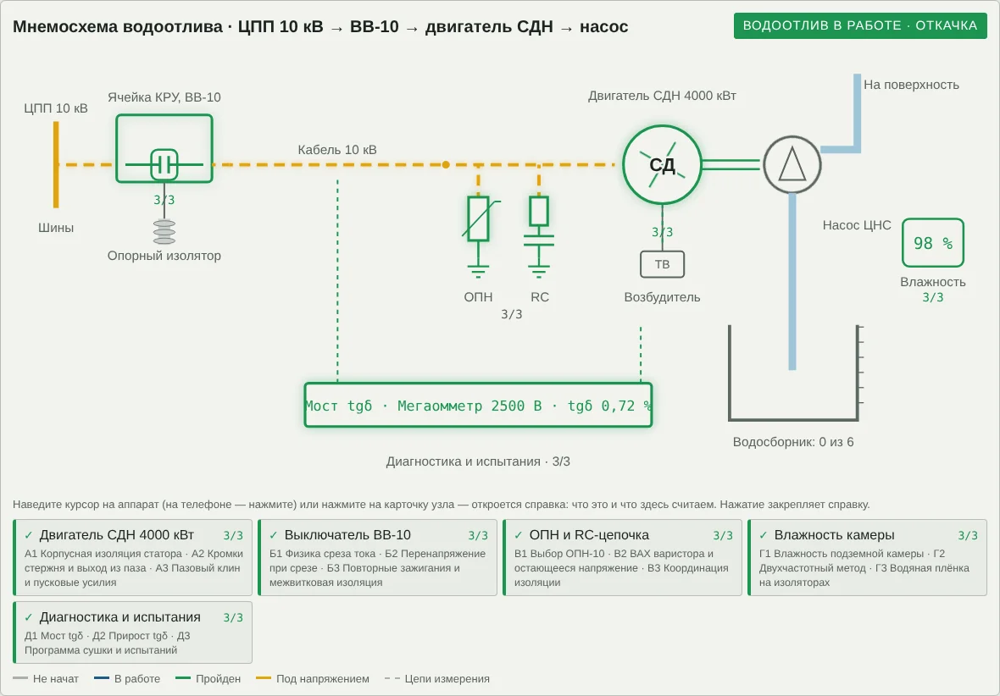
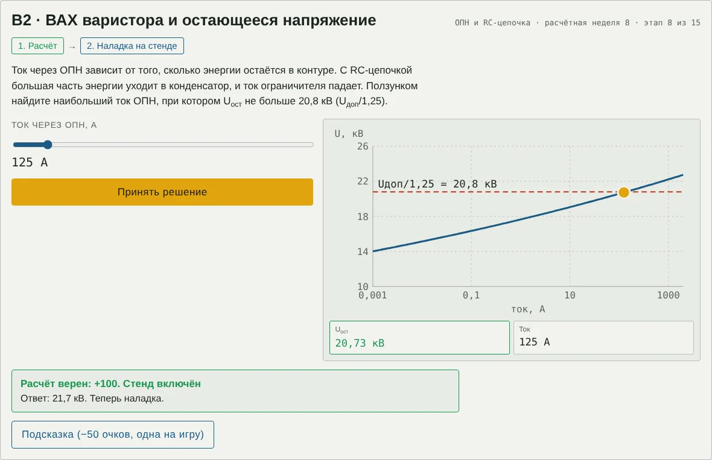

Техника высоких напряжений
Методические указания для студентов
Изоляция привода главного водоотлива 10 кВ
Деловая игра по сквозному заданию, вариант 3, недели 1–15
Цель занятия. Закрепить расчёты 15 недель задания на одном объекте — приводе насоса главного водоотлива шахты с синхронным двигателем 10 кВ — и научиться принимать по ним решения: выбирать толщины, номиналы, схемы защиты и режимы так, чтобы изоляция работала с запасом в сырой подземной камере. Что понадобится: компьютер или телефон с браузером, калькулятор с натуральным логарифмом и степенями, эти указания. Ссылку на игру выдаёт преподаватель. Продолжительность: 60–90 минут; прогресс сохраняется в браузере. |
1. Объект: главный водоотлив
Подземная подстанция 10 кВ (ячейка КРУ с вакуумным выключателем ВВ-10) по бронированному кабелю питает синхронный двигатель СДН 4000 кВт центробежного насоса. На зажимах двигателя установлены ОПН и RC-цепочка, возбуждение подаёт тиристорный возбудитель. Насос откачивает воду из водосборника на поверхность. Камера сырая: 18 °C, влажность до 98 %, капёж с кровли; поэтому в схеме есть подогрев и узел диагностики.

Рис. 1. Мнемосхема водоотлива после прохождения всех этапов: КРУ 10 кВ с ВВ-10 → кабель → ОПН и RC-цепочка → двигатель СДН с возбудителем → насос и водосборник; узлы «Влажность камеры» и «Диагностика»
| Узел | Этапы | Что выбирается на стенде |
|---|---|---|
| Двигатель СДН 4000 кВт | А1–А3 | толщина изоляции; радиус скругления кромки; поджатие клина |
| Выключатель ВВ-10 | Б1–Б3 | опасные коммутации; защитный конденсатор; резистор RC-цепочки |
| ОПН и RC-цепочка | В1–В3 | класс ОПН; допустимый ток ОПН; схема защиты |
| Влажность камеры | Г1–Г3 | подогреватель; решение по сушке; мера против утечки |
| Диагностика и испытания | Д1–Д3 | схема моста; оценка трёх двигателей; порядок работ |
2. Правила игры
Наведите указатель на аппарат на схеме — всплывёт справка: что это за аппарат и что на нём считают. Нажатие закрепляет справку (на телефоне — касание). Значок «?» в тексте задания поясняет термин и бесплатен.
Каждый из 15 этапов состоит из двух шагов: расчёт (ввести число) и решение на интерактивном стенде. Всего 30 проверок.
Числовой ответ принимается с допуском ±3 %; дробную часть можно отделять запятой или точкой.
«Жизни» — уровень воды в водосборнике (шкала 0–6): каждая ошибка поднимает воду на деление, шестая затапливает насосную камеру, и игра начинается заново. Три верных ответа подряд с первой попытки откачивают одно деление.
Очки: верно с первой попытки — 100, после ошибки — 50; подсказка (одна на игру) снимает 50. Максимум — 3000.
На стенде зелёные показания — условие выполнено, красные — нет. Часто нужно наименьшее или наибольшее подходящее значение — читайте задание до конца.
После последнего этапа нажмите «Пуск», затем «Скопировать итог» и отправьте текст преподавателю.

Рис. 2. Пример стенда: этап В2, ВАХ варистора. Слева — регулятор тока и кнопка «Принять решение», справа — характеристика и показания
3. Порядок работы на этапе
Прочитайте «Дано» и пояснение, выпишите формулы.
Выполните расчёт, следите за единицами и за тем, где нужна амплитуда, а где действующее значение, где фазное, а где линейное. Запишите ответ в бланк.
Введите ответ в игре. Ошиблись — проверьте единицы и порядок действий.
На стенде сначала оцените решение расчётом, затем подтвердите его. Запишите решение в бланк.
4. Этапы
Двигатель СДН 4000 кВт
Синхронный насосный двигатель 10 кВ с термореактивной эпоксидно-слюдяной изоляцией статора класса F; пуск прямой от сети. Три этапа: корпусная изоляция, поле на кромках стержня, крепление стержней в пазу.
А1 · Корпусная изоляция статора (неделя 1)
Дано. Uном = 10 кВ. Заводское испытание обмотки 2Uном + 1 = 21 кВ (действующее, 1 мин). Кратковременная прочность эпоксидно-слюдяной изоляции Eкр = 25 кВ/мм, запас kз = 3; допустимая длительная напряжённость Eдл = 2,5 кВ/мм (амплитуды). Ряд толщин: 2,5; 3,0; 3,5; 4,0; 4,5 мм.
Пояснение. Толщину корпусной изоляции проверяют по двум условиям: кратковременному — по испытательному напряжению с запасом, и длительному — по рабочему фазному напряжению на весь срок службы. Берётся большее значение. Межвитковую изоляцию проверяют отдельно, по напряжению на витке при крутых фронтах (этап Б3).
(1)
(2)
(3)
Расчёт. Найти: толщина корпусной изоляции по испытательному напряжению, мм.
Решение на стенде. Выбрать из ряда наименьшую толщину, удовлетворяющую обоим условиям.
Ответ: расчёт ____________ мм; решение ______________________
А2 · Кромки стержня и выход из паза (неделя 2)
Дано. Амплитуда фазного напряжения 8,16 кВ; толщина изоляции 4 мм (А1). Кромку стержня моделируют цилиндром радиусом скругления r. Порог Emax ≤ 4,0 кВ/мм. Ряд радиусов: 0,5; 1; 1,5; 2; 3 мм.
Пояснение. У кромок прямоугольного стержня поле сгущается: малый радиус кривизны — как у жилы коаксиального кабеля (учебник Важова, ф. 1.51). На выходе стержня из паза у края пакета стали поле выравнивает полупроводящее и противокоронное покрытие.
(4)
Расчёт. Найти: Emax на кромке при r = 1 мм, кВ/мм.
Решение на стенде. Выбрать наименьший радиус скругления, при котором Emax ≤ 4 кВ/мм.
Ответ: расчёт ____________ кВ/мм; решение ______________________
А3 · Пазовый клин и пусковые усилия (неделя 3)
Дано. P = 4000 кВт, cos φ = 0,9, η = 0,97; пусковой ток 6Iн; в пазу 8 проводников, a = 2 параллельные ветви, ширина паза b = 15 мм. Поджатие клина — не меньше 1,4F′. Ряд: 2; 3; 4; 5; 6 кН/м.
Пояснение. Ток паза создаёт поперечное поле; сила на проводники направлена ко дну паза и пульсирует с частотой 100 Гц. Если клин ослаб, стержни вибрируют, полупроводящее покрытие истирается, и между изоляцией и сталью начинаются пазовые разряды — частичные разряды, быстро разрушающие изоляцию.
(5)
(6)
(7)
Расчёт. Найти: усилие на стержни паза при пуске F′, кН/м.
Решение на стенде. Выбрать наименьшее поджатие клина не меньше 1,4F′.
Ответ: расчёт ____________ кН/м; решение ______________________
Выключатель ВВ-10
Вакуумный выключатель ячейки КРУ подземной подстанции. Три этапа: физика среза тока, перенапряжение при срезе и защитный конденсатор, повторные зажигания и межвитковая изоляция.
Б1 · Физика среза тока (неделя 4)
Дано. Ток среза i0 = 4,5 А; ёмкость обмотки и кабеля C = 0,05 мкФ; √(L/C) = 1200 Ом.
Пояснение. При отключении малых индуктивных токов ток обрывается раньше перехода через нуль. Энергия L·i0²/2 переходит в ёмкость (учебник Важова, разд. 4.8.2). Перенапряжение зависит и от напряжения на ёмкости U0 в момент среза: при индуктивном токе (пуск, холостой ход) ток проходит через нуль вблизи амплитуды напряжения.
(8)
(9)
Расчёт. Найти: энергия, запасённая в индуктивности в момент среза, Дж.
Решение на стенде. Выбрать коммутации, опасные по перенапряжениям.
Ответ: расчёт ____________ Дж; решение ______________________
Б2 · Перенапряжение при срезе (неделя 5)
Дано. U0 = √2·10/√3 = 8,16 кВ; Z = 1200 Ом; i0 = 4,5 А. Скорость восстановления прочности вакуумного промежутка — принять 20 В/мкс. Ряд конденсаторов: 0; 0,1; 0,25; 0,5 мкФ.
Пояснение. Амплитуда перенапряжения — из баланса энергии (учебник Важова, ф. 4.83–4.84). Начальная скорость нарастания напряжения на ёмкости после среза равна i0/C (производная формулы 4.85): если она больше скорости восстановления прочности промежутка, возникает повторное зажигание.
(10)
(11)
Расчёт. Найти: амплитуда перенапряжения на зажимах статора, кВ.
Решение на стенде. Выбрать наименьший защитный конденсатор, при котором du/dt ≤ 20 В/мкс.
Ответ: расчёт ____________ кВ; решение ______________________
Б3 · Повторные зажигания и межвитковая изоляция (неделя 6)
Дано. Скачок при повторном зажигании ΔU = 15 кВ, фронт tф = 0,2 мкс; длина проводника первой катушки 10 м, скорость волны в обмотке 150 м/мкс; 8 витков в катушке; Zкаб = 30 Ом. Ряд резисторов RC-цепочки: 0; 10; 30; 100; 1000 Ом.
Пояснение. При крутом фронте напряжение распределяется по обмотке неравномерно: пока волна проходит первую катушку, почти весь фронт лежит на ней. Отражение от зажимов удваивает волну; RC-цепочка с R = Zкаб устраняет отражение (правило Петерсена, учебник Важова, разд. 4.3).
(12)
(13)
Расчёт. Найти: напряжение на первой катушке при повторном зажигании, кВ.
Решение на стенде. Выбрать резистор RC-цепочки, при котором нет отражения.
Ответ: расчёт ____________ кВ; решение ______________________
ОПН и RC-цепочка
Защита обмотки на зажимах двигателя. Три этапа: класс ОПН для сети с изолированной нейтралью, ВАХ варистора, координация с изоляцией обмотки.
В1 · Выбор ОПН-10 (неделя 7)
Дано. Сеть 10 кВ с изолированной нейтралью; наибольшее рабочее линейное напряжение 12 кВ; защита от замыканий на землю отключает присоединение за 1 с; допустимое временное перенапряжение ОПН за 1 с Kt = 1,25. Ряд Uнр: 7,2; 9,6; 10,5; 11,5; 12,7 кВ.
Пояснение. При замыкании фазы на землю в сети с изолированной нейтралью напряжение здоровых фаз относительно земли поднимается до линейного (учебник Важова, разд. 4.8.3). ОПН должен выдержать его без перегрева; чем короче замыкание, тем ниже допустимый класс и тем ниже остающееся напряжение.
(14)
Расчёт. Найти: наименьшее длительно допустимое рабочее напряжение ОПН, кВ.
Решение на стенде. Выбрать класс ОПН.
Ответ: расчёт ____________ кВ; решение ______________________
В2 · ВАХ варистора (неделя 8)
Дано. ВАХ U = C·Iα, α = 1/30 ≈ 0,033; для ОПН 9,6 кВ U1мА = 1,46·9,6 = 14,0 кВ; коммутационный ток 500 А; Uдоп/1,25 = 20,8 кВ.
Пояснение. Оксидно-цинковый варистор имеет коэффициент нелинейности α = 0,02…0,1 (учебник Важова, разд. 4): при росте тока на шесть порядков напряжение растёт лишь в 1,5 раза. С RC-цепочкой часть энергии уходит в конденсатор, и ток ограничителя меньше.
(15)
Расчёт. Найти: остающееся напряжение при 500 А, кВ.
Решение на стенде. Найти наибольший ток ОПН, при котором Uост ≤ 20,8 кВ.
Ответ: расчёт ____________ кВ; решение ______________________
В3 · Координация изоляции (неделя 9)
Дано. Uдоп = √2·0,8(2Uном + 3) = 26,0 кВ (амплитуда испытательного напряжения при вводе, учебник Важова, табл. П3.9); требуемый k ≥ 1,25. Варианты защиты: ОПН 12,7 кВ; ОПН 9,6 кВ; только RC-цепочка; ОПН 9,6 кВ + RC-цепочка.
Пояснение. Уровень защиты должен быть ниже уровня изоляции с запасом (учебник Важова, разд. 4.2, ф. 4.4–4.5). Машинная изоляция имеет самый низкий уровень, поэтому для двигателей координация труднее всего.
(16)
Расчёт. Найти: коэффициент координации для одного ОПН 9,6 кВ при 500 А.
Решение на стенде. Выбрать схему защиты.
Ответ: расчёт ____________; решение ______________________
Влажность камеры
Подземная насосная камера: 18 °C, влажность до 98 %, капёж. Три этапа: точка росы и подогрев, двухчастотный метод, ток утечки по увлажнённым изоляторам.
Г1 · Влажность подземной камеры (неделя 10)
Дано. t = 18 °C, φ = 98 %; тепловое сопротивление двигателя без вентиляции 8 К/кВт; обмотка должна быть на 5 К теплее воздуха. Ряд подогревателей: 0,25; 0,5; 0,75; 1; 2 кВт.
Пояснение. Поверхность холоднее точки росы покрывается водой. В подземной камере точка росы лишь на доли градуса ниже температуры воздуха, поэтому конденсат выпадает почти при любой стоянке. Стояночный подогрев держит обмотку теплее воздуха.
(17)
(18)
(19)
Расчёт. Найти: точка росы, °C.
Решение на стенде. Выбрать наименьший подогреватель.
Ответ: расчёт ____________ °C; решение ______________________
Г2 · Двухчастотный метод (неделя 11)
Дано. C2 = 0,168 мкФ, C50 = 0,120 мкФ; R15 = 40 МОм, R60 = 45 МОм. Нормы: C2/C50 ≤ 1,3 (учебник Важова, разд. 3.8.2); R60 ≥ 10 МОм/кВ и Kабс ≥ 1,3 (табл. П3.7).
Пояснение. Увлажнённый слой изоляции поляризуется медленно: при 2 Гц его ёмкость успевает проявиться, при 50 Гц — нет (двухслойная модель, учебник Важова, ф. 3.16). Метод создан для волокнистой изоляции; для термореактивной его подтверждают сопротивлением и коэффициентом абсорбции.
(20)
(21)
Расчёт. Найти: отношение C2/C50.
Решение на стенде. Принять решение по двигателю.
Ответ: расчёт ____________; решение ______________________
Г3 · Водяная плёнка на изоляторах (неделя 12)
Дано. Опорный изолятор КРУ: длина пути утечки 180 мм, средний диаметр 60 мм; поверхностное сопротивление водяной плёнки ρs = 2 МОм; Uф = 10/√3 кВ.
Пояснение. Ток утечки по увлажнённой поверхности неравномерно нагревает плёнку; образуются подсушенные участки, перекрываемые частичными дугами, которые могут вырасти до полного перекрытия (учебник Важова, разд. 1.1.12).
(22)
(23)
Расчёт. Найти: ток утечки, мА.
Решение на стенде. Выбрать наименее затратную меру, при которой ток постоянно не больше 0,1 мА.
Ответ: расчёт ____________ мА; решение ______________________
Диагностика и испытания
Мост переменного тока, мегаомметр, испытательная установка. Три этапа: tgδ по мосту, прирост tgδ, программа сушки и испытаний.
Д1 · Мост tgδ (неделя 13)
Дано. Мост переменного тока уравновешен при 0,5Uном: R4 = 1000/π Ом, C4 = 0,072 мкФ; корпус двигателя заземлён наглухо.
Пояснение. В мосте Шеринга в равновесии tgδ = ωR4C4. В прямой схеме нижний вывод объекта подключают к плечу моста — объект должен быть изолирован от земли. Для объектов с заземлённым корпусом применяют перевёрнутую схему: регулируемые плечи под высоким потенциалом, оператор работает через изолирующие штанги или экран. Схемы мостов — в курсе электрических измерений; учебник Важова называет мосты МД-16, Р-525, Р-595 (разд. 3.8.2).
(24)
Расчёт. Найти: tgδ при 0,5Uном, %.
Решение на стенде. Выбрать схему моста.
Ответ: расчёт ____________ %; решение ______________________
Д2 · Прирост tgδ (неделя 14)
Дано. tgδ при 0,5Uном и Uном: насос № 1 — 0,35 и 0,75 %; № 2 — 0,72 и 2,10 %; № 3 — 0,80 и 3,40 %. Ориентир задания: Δtgδ ≤ 1 % — норма; 1…2 % — контроль; > 2 % — ремонт.
Пояснение. Рост tgδ с напряжением означает, что в изоляции зажигаются частичные разряды — в расслоениях и пустотах (ионизационная кривая).
(25)
Расчёт. Найти: прирост Δtgδ насоса № 2, %.
Решение на стенде. Оценить три двигателя.
Ответ: расчёт ____________ %; решение ______________________
Д3 · Программа сушки и испытаний (неделя 15)
Дано. Учебник Важова, табл. П3.9: обмотка статора двигателей 1000 кВт и более свыше 6,6 кВ — 0,8(2Uном + 3) кВ при вводе в эксплуатацию, 16 кВ при капитальном ремонте (50 Гц, 1 мин). 48 кВ — испытание межконтактного промежутка выключателя 10 кВ (табл. П3.1).
Пояснение. Сначала сушка, затем неразрушающие измерения (сопротивление, Kабс, C2/C50, tgδ), затем разрушающее испытание повышенным напряжением и контрольное измерение сопротивления после него.
(26)
Расчёт. Найти: испытательное напряжение обмотки при вводе в эксплуатацию, кВ.
Решение на стенде. Выбрать правильный порядок работ после капремонта.
Ответ: расчёт ____________ кВ; решение ______________________
5. Справочные данные
| Величина | Значение |
|---|---|
| √2; √3; π | 1,414; 1,732; 3,1416 |
| μ0 | 4π·10⁻⁷ Гн/м |
| Амплитуда фазного напряжения сети 10 кВ | √2·10/√3 = 8,16 кВ |
| Степень с дробным показателем | xα = eα·ln x |
| 1 мкФ; 1 мА; 1 мкс | 10⁻⁶ Ф; 10⁻³ А; 10⁻⁶ с |
| ω при 50 Гц | 314,16 рад/с |
6. Контрольные вопросы
(А1) Почему толщину проверяют и по испытательному, и по рабочему напряжению?
(А2) Почему кромки стержня скругляют и покрывают полупроводящим слоем?
(А3) Как механика паза связана с электрической прочностью изоляции?
(Б1) Почему отключение двигателя при пуске опаснее отключения под нагрузкой?
(Б2) Почему однократный срез сам по себе не страшен, а конденсатор всё равно нужен?
(Б3) Почему межвитковая изоляция страдает именно от крутых фронтов?
(В1) Почему в шахтной сети можно взять ОПН с более низким Uнр, чем в обычной сети с изолированной нейтралью?
(В2) Почему остающееся напряжение мало зависит от тока?
(В3) Зачем двигателю и ОПН, и RC-цепочка?
(Г1) Почему в шахтной камере конденсат опаснее, чем на поверхности?
(Г2) Почему один метод недостаточен для термореактивной изоляции?
(Г3) Почему опасен даже небольшой ток утечки?
(Д1) Почему при R4 = 10⁴/π Ом мост удобен?
(Д2) Что говорит рост tgδ с напряжением?
(Д3) Почему испытание повышенным напряжением проводят последним?
7. Отчёт и оценка
В отчёт входят: заполненный бланк, текст итога из игры и письменные ответы на три контрольных вопроса по выбору преподавателя.
| Очки (максимум 3000) | Оценка |
|---|---|
| 2700 и больше | «отлично» |
| 2250–2699 | «хорошо» |
| 1700–2249 | «удовлетворительно» |
| меньше 1700 или затопление | повторное прохождение |
Приложение. Бланк отчёта
ФИО ______________________________ Группа ________ Дата ________
| Этап | Что найти | Расчёт | Решение | Ошибок |
|---|---|---|---|---|
| А1 | Толщина корпусной изоляции по испытательному напряжению, мм | |||
| А2 | Emax на кромке при r = 1 мм, кВ/мм | |||
| А3 | Усилие на стержни паза при пуске F′, кН/м | |||
| Б1 | Энергия, запасённая в индуктивности в момент среза, Дж | |||
| Б2 | Амплитуда перенапряжения на зажимах статора, кВ | |||
| Б3 | Напряжение на первой катушке при повторном зажигании, кВ | |||
| В1 | Наименьшее длительно допустимое рабочее напряжение ОПН, кВ | |||
| В2 | Остающееся напряжение при 500 А, кВ | |||
| В3 | Коэффициент координации для одного ОПН 9,6 кВ при 500 А | |||
| Г1 | Точка росы, °C | |||
| Г2 | Отношение C2/C50 | |||
| Г3 | Ток утечки, мА | |||
| Д1 | Tgδ при 0,5Uном, % | |||
| Д2 | Прирост Δtgδ насоса № 2, % | |||
| Д3 | Испытательное напряжение обмотки при вводе в эксплуатацию, кВ |
Итог игры: очки ______ уровень воды ______ время ______ оценка ______